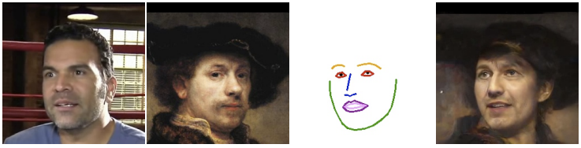

|
Yuming Gu
I am a first-year Master student in Computer Science, Viterbi School of Engineering, Unviersity of Southern California, working in Vision and Graphics Lab, advised by Prof. Hao Li. Before coming to USC, I received the B.E. in Electronic Engineering from Dalian Maritime University in 2019.
My research interests contain Computer Graphics & Computer Vision and Machine Learning. In particular, I am interested in how we can digitalize human body and make virtual human available.
Email /
CV /
Scholar
|
|
|
Education
University of Southern California, USA
Master student • Sept. 2019 to Present
Dalian Maritime University, China
Bachelor of Engineering • Sept. 2015 to Jun. 2019
|
|

|
One-Shot Identity-Preserving Portrait Reenactment
Sitao Xiang, Yuming Gu, Pengda Xiang, Mingming He, Koki Nagano, Haiwei Chen, Hao Li
arixv preprint, 2020 [PDF]
Area: Image systhesis, human face
We present a deep learning-based framework for portrait
reenactment from a single picture of a target (one-shot) and a video of a
driving subject.
|
|
|
Protecting World Leaders Against Deep Fakes
Shruti Agarwal, Hany Farid, Yuming Gu, Mingming He, Koki Nagano, Hao Li
Computer Vision and Pattern Recognition (CVPR workshops), 2019 [PDF]
Area: Image systhesis, Media Forensics
we describe a forensic technique that models facial expressions and movements that typify an individual's speaking pattern.
|
|